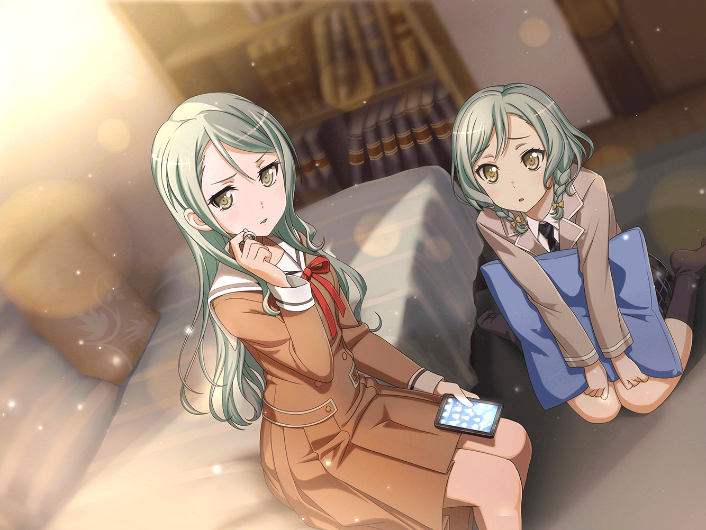

白金家 燐子の部屋
あこのチャット
『でね！
あこもリサ姉も加入していいよって言われて！
今日のことは、一生忘れない！！』
燐子のチャット
『オーディション合格おめでとう！
あこちゃんの努力が認められたんだね』
あこのチャット
『でも努力だけじゃないかも！』
燐子のチャット
『どういうこと？』
あこのチャット
『曲が始まったら、勝手に身体が動いたの！
すっごく上手く叩けて、リサ姉はマジックって言ってた！
他のメンバーもいつもより、うまく演れたって』
あこのチャット
『友希那さんも言ってた！
みんなそう思ったんだよ！ すごくない！？』
燐子のチャット
『そんなことがあるんだ。うん。バンドってすごいね』
あこのチャット
『すごいよ！ やっぱりバンドって最高！
みんなで演るのって、楽しすぎる！
ずっと一人で練習してたから、超感動したよ！』
燐子
……みんなで……
燐子
（昔からずっと、ひとりで弾いてるピアノ……
……大好き、だけど……
誰かと一緒になんて……私は……考えたこともない……）
あこのチャット
『みんなで集まると、何が起こるかわからない！
キセキって、たぶんこーいうことだよ！』
燐子
……キセキ……
燐子のチャット
『バンド、きっと成功するね。私も応援する』
あこのチャット
『ありがとう！ 本当に嬉しいよ！
りんりんも何か音楽始めてみたら、この感じわかるよ！』
燐子
あ……
私……あこちゃんにピアノの話、してないんだ……
あこのチャット
『バンド名はまだ決まってないんだ。
りんりん何がいいと思う？』
燐子
…………
あこのチャット
『りんりん？
もしかしてもうゲーム、インした？
なら我も出陣するのでしばし待たれよ！』
燐子
……あっ
燐子のチャット
『まだインしてないよ。
その前にもう少し、
あこちゃんのバンドの話を聞いたらだめかな？』
あこのチャット
『任せよ！ 今宵は一晩中語り明かそうぞ！』
燐子チャット
『ありがとう。嬉しい』
燐子
……バンドの話……不思議だけど……
聞いてるだけですごく……楽しい……

氷川家 紗夜の部屋
紗夜
（今日のセッション……不思議な体験だったわ……）
日菜
おかえり〜！
……お姉ちゃん、何見てるの？

紗夜
！
日菜。スマホ覗き込まないでって、
いつも言ってるでしょ
日菜
何のサイト？ ……FUTURE WORLD FES.？
なにこれロックのイベント？
紗夜
これは私のことで、日菜には関係ない
日菜
……そっかー。関係ないかー。
じゃーさ、じゃーさ、リビング行かない？
お姉ちゃんの好きなわんこの番組、お父さんが見てるよ
紗夜
録画してあるから、あとで見るわ。今忙しいの。
だいたい、日菜は犬、別に好きじゃないでしょ
日菜
でも、お姉ちゃんは好きじゃん？
あたし達双子じゃん？
たまには一緒になにかしても……
紗夜
いつもあなたは、一緒のことばかりするじゃない
日菜
……！
お姉ちゃん、あたしは……
紗夜
同じ日に生まれて、
私の方が少しだけ先に生まれたからって、
なんで同じことをされないといけないの？
紗夜
もう高校生なんだから、
お互い干渉しないって約束したでしょう。
自分の部屋に帰ってちょうだい。私は練習があるの
日菜
……わかった。……あの。……ごめんね？
紗夜
（『フェス』のことが日菜に知られたら、
私の真似をして、
必ず自分も出ると言ってくる）
紗夜
（そして今までしてきたように、
私の努力を、軽々と才能で追い抜いていく……）
紗夜
比べられるのは、もうたくさん。
……必ず、頂点を獲ってみせる……

今井家、湊家の前
リサ
いやーー、なんか驚きの展開だよね☆
友希那とバンドか。うん、アタシ頑張んなきゃ！
友希那
……あの時はセッションの勢いもあって何も言わなかったけど、
メンバーの意見に従う必要はないわ
リサ
ん。でもさ、アタシ……友希那をほっとけないから。
アタシには友希那を一人にさせないって使命があるからね。
だから、バンドもやる
友希那
バンドは、そういうのとは関係……
リサ
うん。バンドはバンドでいい。
アタシはそんな友希那の近くにいたいの
リサ
（いつか……ちゃんと友希那が昔みたいに、
笑えるようになるまで）
リサ
それだけだからさっ！
友希那
…………
……ついてこられなくなったら、
幼馴染でも……抜けてもらうから
リサ
はーいっ！ そのために、練習頑張りまーすっ！
友希那
バンドメンバーが揃ったら、
FUTURE WORLD FES.出場のためのコンテストに出る。
それは、ちゃんとわかってるの？
リサ
うん。……そうだね。わかってる
友希那
メジャーで『売れる音楽』を強要され、
苦しんでいたお父さんを、
『今の君達の音楽は要らない』と切り捨てたあのフェス……
友希那
ーーお父さんは、そのせいで音楽を辞めた。
ずっと憧れていたステージに拒まれて……
だから、絶対に失敗は許されない。許さないから
リサ
うん。アタシはブランクもあるし、
……みんなより技術もない。でも、ーーがんばるよ
リサ
（友希那がそんな顔をしているうちは、
離れるわけには、いかないから）
友希那
……なら、好きにして
リサ
うん！！